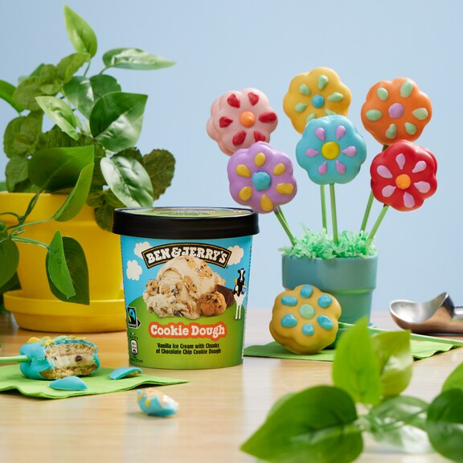

Bohemian Raspberry
Laat je smaakpapillen rocken met de terugkeer van de zoete eerbetoon aan muziekroyalty Queen, ter gelegenheid van de 50e verjaardag van hun legendarische nummer, "Bohemian Rhapsody"!
lees Meer
Verkooppunten
Vind jouw dichtstbijzijnde supermarkt of laat Ben & Jerry’s bezorgen door een restaurant of bezorg partner.
Vind nu!Doe mee
Wij spreken ons uit over onderwerpen die ons nauw aan het hart liggen. Ontdek hoe jij kan helpen.
Ontdek meer over onze waardenTopverhalen
-

QUIZ: Celebrate Our Birthday With 10 Trivia Questions
Break out the balloons, it’s our birthday! Here’s a birthday challenge for you: Can you answer 10 trivia questions about your favorite ice cream makers? Give it a go!
Meer lezen -

Iemand helpen is toch geen misdrijf? Bescherm solidariteit in Europa!
Europese politici willen hulp aan nieuwkomers bestraffen. Kom in actie!
Meer lezen -

Ice Cream Flower-wiches
Spring is in the air! Celebrate the season with these customizable Ice Cream Flower-wiches, perfect for making and decorating with friends!
Meer lezen
Wij maken dolgraag ijs, maar ons werk krijgt pas echt betekenis wanneer wij ons bedrijf inzetten om de wereld mooier te maken.
-

Zorgvuldig uitgekozen ingrediënten
Onze ingrediënten dragen bij aan positieve verandering en zorgen ervoor dat ons ijs sensationeel smaakt!
Productinkoop -

Gedeeld succes
Ons doel is welvaart te creëren voor iedereen die verbonden is met ons bedrijf.
Onze missie en waarden -

Een verschil maken
Wij spreken ons uit over onderwerpen die ons nauw aan het hart liggen.
Onderwerp die wij belangrijk vinden